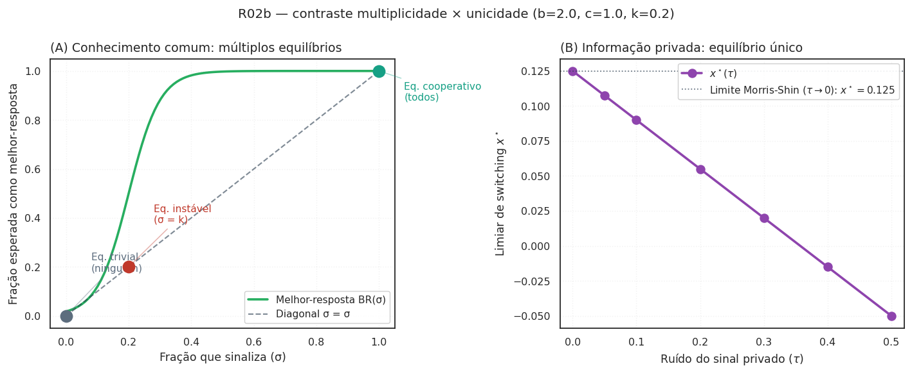

Protocolo ODD do modelo WaaS¶
Documentação seguindo Grimm, Railsback, Vincenot et al. (JASSS 23(2):7, 2020).
1. Visão geral¶
1.1 Propósito e padrões¶
Quantificar a taxa de denúncia, taxa de verdadeiros positivos, taxa de falsos positivos e bem-estar social gerado pelo mecanismo WaaS sob três regimes institucionais brasileiros.
Padrões-alvo para calibração:
- CADE: 109 acordos de leniência cumulativos em 20 anos.
- CADE: 349 TCCs em 7,5 anos (média 47/ano), conforme Saito 2021.
- Dyck-Morse-Zingales (2010): aproximadamente 19% das fraudes corporativas grandes nos EUA são descobertas por funcionários.
1.2 Entidades, variáveis de estado, escalas¶
Três populações:
- Trabalhadores — arquétipos heterogêneos (Hokamp & Pickhardt 2010): ético (15%), imitativo (35%), racional (40%), aleatório (10%). Estado: arquétipo, w_a, k_pessoal, observou, sinaliza_agora.
- Empresas — parametrizadas por (σ, fatia_mercado, R_receita, eh_violadora).
- Autoridade — capacidade κ e acurácia ρ.
Escalas: 1 tique = 1 trimestre; horizonte = 40 tiques (10 anos). Dimensão "espacial" = rede intra-firma (Watts-Strogatz pequeno-mundo).
1.3 Visão geral do processo¶
Por tique:
- P0 — dissuasão endógena (R01): atualiza detecção percebida
pe re-decide quem viola; firmas com cláusula de vesting acelerado (R07) recebem desconto preventivo emg_i(Hirschman antes mesmo de qualquer denúncia). - P1 — cada trabalhador observador amostra
s_i = σ + ε_ie decidea_i ∈ {0, 1}. - P2 — agregador conta
Σ_i a_ina rede intra-firma; dispara se≥ k. - P2.5 — sob
modo_corrida=True(R20/LCMC): para cada firma que atingiun_cooperadores ≥ q_min × n_trabalhadoresna janelaΔt, registra naFilaLenienciaglobal e atribuiposicao_fila_leniencia. Os cooperadores internos já têmposicao_corrida_internaatribuída em P1 viaFilaInternaCooperacao. - P3 — empresa decide pagar denunciantes. (i) sob modo histórico: IC-F*
ampliada por Hirschman (
D + custo_exodo > W); (ii) sobmodo_corrida=True: IC-F* com decaimento de posição —W_total < D_Saito(pos_firma) · S, ondeW_total = Σ decaimento_W(pos_trabalhador, W_base)consome o gradiente Saito normalizado. - P4 — autoridade recebe caso (com restrição de capacidade κ).
- P5 — coleta de estado.
2. Conceitos de desenho¶
- Princípios básicos: PBE; seleção inspirada em jogo global (Morris-Shin 1998) e difusão aproximando contágio complexo (Centola-Macy 2007). Nota: o código usa limiares heurísticos (sinal privado ruidoso; imitação por fração de vizinhos no tique anterior), não o equilíbrio do jogo global nem um modelo formal de contágio — ver §3.3 e os submódulos.
- Pressuposto de homogeneidade (Morris-Shin): o resultado de unicidade do jogo global de Morris-Shin (1998), aplicado em P2 e na Proposição 2, supõe homogeneidade dos agentes — mesmo payoff, mesma estrutura informacional. O ABM, em contraste, tem arquétipos heterogêneos (ético/imitativo/racional/aleatório) e, com R08, papéis heterogêneos com
observabilidadediferente por par (papel, conduta). Não há, hoje, resultado fechado conhecido de unicidade do equilíbrio sob essa heterogeneidade; a Proposição 2 deve ser lida como conjectura aberta neste regime. - Emergência: taxa macro de denúncia a partir de limiares micro e topologia de rede.
- Sensoriamento: trabalhadores observam σ com ruído; plataforma observa Σa exatamente mas só publica gatilho binário.
- Estocasticidade: ε_i, arquétipo, detecção, represália.
- Acoplamento por conhecimento comum: P(massa crítica) cresce com σ por (i)
q(σ)crescente e (ii) atualização de crenças de ordem superior.
2.1 Diagnóstico Ostrom — 8 design principles (R21 sob reframe)¶
Após a crítica do Sociólogo na x10 v2, a leitura do mecanismo deslocou-se de "bem quase-público à Samuelson" para "capital social organizacional com risco de erosão endógena" (Coleman 1990). Ostrom (1990, Governing the Commons, cap. 3) propôs 8 design principles para governança sustentável de bens coletivos. Cruzá-los com o desenho atual do WaaS revela quais princípios o modelo satisfaz, quais ignora silenciosamente, e quais abrem pendências explícitas.
| # | Princípio Ostrom | Status no WaaS | Reporter/parâmetro |
|---|---|---|---|
| P1 | Fronteiras claras: quem participa do commons | Atendido — rede intra-firma observável a CADE via auditoria | papel, condutas.observabilidade |
| P2 | Congruência entre regras e condições locais | Ausente — não há proporcionalidade da recompensa ao dano sofrido pelo trabalhador | pendência R-novo |
| P3 | Arenas de escolha coletiva | Ausente — trabalhadores não participam do desenho da recompensa | pendência R-novo |
| P4 | Monitoramento por agentes responsáveis | Atendido — kappa_capacidade e rho_acuracia da AutoridadeAgent |
reporter n_empresas_notif |
| P5 | Sanções graduadas | Atendido — gradiente Saito (43,43% → 34,51% → 20,22%) por posição na fila | corrida.decaimento_D, decaimento_W |
| P6 | Mecanismos baratos de resolução de conflito | Ausente — denunciante v. firma é judicial-caro (R$ honorários) | custo_legal_uw |
| P7 | Reconhecimento mínimo do direito de auto-organização | Ausente — vedado por dever de lealdade contratual brasileira (Art. 482 CLT) | pendência D03 + R-novo |
| P8 | Empreendimentos aninhados (governança multinível) | Silencioso — coordenação CADE-MPF-MPT é institucionalmente inexistente | cenário eixo_jurisdicao_concorrente (R25) |
Saldo: 3 atendidos (P1, P4, P5), 1 silencioso (P8), 4 ausentes (P2, P3,
P6, P7). A LCMC (canal de depósito condicional + instrumentos
opcionais de internalização) é, no vocabulário de Ostrom, um commons
imposto de cima (top-down), não governado de baixo. A teoria prevê
degradação por erosão endógena (Coleman 1990); o reporter
capital_social_residual_firma (R26) é o instrumento de medida proposto.
3. Detalhes¶
3.1 Inicialização¶
- Número de empresas, tamanho médio (calibrado contra 30–50 mil empregados em subsidiárias de big tech no Brasil).
- Fração violadoras: 30%.
- Salário base: R$ 180.000 (Brasscom 2024).
- Rede: Watts-Strogatz com
k = 2% de n_firm.
3.2 Entrada¶
Não há entrada externa em tempo real. Calibração ex post.
3.3 Submodelos¶
Ver src/waas_antitrust/agents.py e src/waas_antitrust/model.py.
Proposições com esboços de prova¶
Proposição 1 — Viabilidade IC do caminho "empresa paga"¶
Sob Regime B, existem parâmetros no interior do espaço factível em que IC-F* (D > W) e IR-W são satisfeitas estritamente.
Esboço: a jurisprudência da Res. 21/2018 permite D até 50% da multa esperada; para uma grande empresa de tecnologia com receita R no setor afetado e multa típica em [1%, 20%]·R, D ∈ [0,5%·R, 10%·R]. Pagamentos por trabalhador da ordem de 3·w_a com n ≤ 20 trabalhadores disparados ainda mantêm D > W. IR-W requer W ≥ r·(L_carreira + T·w_a/12); com r = 0,15, T = 8 meses, L = 2·w_a, o limiar é ≈ 0,4·w_a, bem abaixo da recompensa proposta. IC-T satisfeita pelo Art. 340 CP. □
Status (v0.1.0): a desigualdade D > W no ponto-alvo é verificada por teste de regressão (
tests/test_model.py); as faixas jurídicas do esboço (multa, D ≤ 50%) são ilustrativas, não calibradas.Reformulação sob LCMC (R20): sob
modo_corrida=True, a Proposição 1 se transforma: existe número finito \(n^\star\) de firmas que satisfazem a IC-F* na fila inter-firma. Para a 1ª firma na fila, \(D_\text{total}(1) \approx 43\% \cdot S\) (gradiente Saito); para a 4ª, \(D_\text{total}(4) \approx 18\% \cdot S\); para a ≥ 9ª (ou nenhuma cooperação interna), cai ao piso de 15%. O esboço novo é: o número de firmas que correm é finito e calibrado contra Saito (2021). Firmas que chegam tarde recaem em TCC clássico — Vetor D (corrida vazia) torna isso explícito quando nenhuma firma atinge \(q_\text{min}\) na janela. Teste direcional emtests/test_corrida.py. Status: conjectura aberta até calibração formal contra TCCs de conduta unilateral (E04 + R03b).
Proposição 2 — Unicidade do equilíbrio de coordenação¶
No limite τ → 0 do subjogo de jogo global, há equilíbrio único de switching s* para cada (k, W, r) na região relevante.
Esboço: aplicação direta do Teorema 1 de Morris-Shin (1998) ao jogo binário com complementaridades estratégicas. □
Status (atualizado — R02 exploratório): o módulo
waas_antitrust.jogo_globalderiva o limiar de switching único do subgame estilizado e mostra sua convergência quando τ → 0 (tests/test_jogo_global.py) — a seleção de equilíbrio único que a proposição afirma. Ressalva: é um subgame estilizado (ganho linear na severidade, massa crítica constante), não integrado à dinâmica de arquétipos do ABM; o contraste formal com a multiplicidade sob conhecimento comum e a generalização seguem em aberto. Sob heterogeneidade (arquétipos × papéis, ver R08), a unicidade do equilíbrio é conjectura aberta — não há, no nosso conhecimento, resultado fechado de Morris-Shin generalizado para esse mix; ver §2 (Pressuposto de homogeneidade).Reformulação sob LCMC (R20): sob
modo_corrida=True, o limiar \(x^\star\) ganha dimensão temporal. Cada trabalhador tem \(x^\star(t)\) porque a recompensa esperada cai com a posição na fila (próprio decaimento \(f_W(k)\) é decrescente). Esboço novo: o limiar de cooperação é único em cada instante; a sequência \(\{x^\star(t)\}_t\) é decrescente sob informação privada e converge ao limiar estático no caso degenerado. Status: conjectura aberta — a integração formal dolimiar_switching_temporalao racional sobmodo_corridaé trabalho de R02b/R20 ainda não escrito.
R02b — Contraste numérico multiplicidade × unicidade (balanço 360° item #5)¶
O contraste central de Morris-Shin (1998) é entre conhecimento comum (múltiplos equilíbrios; resultado clássico de jogos de coordenação) e informação privada (equilíbrio único; resultado de Morris-Shin). A figura abaixo exibe os dois ramos explicitamente:

A figura é o "ponto de fé" da Proposição 2 que estava ausente antes do balanço 360°: ela mostra visualmente que a unicidade Morris-Shin não é evidência sem o contraste com a multiplicidade que ela seleciona. Sob heterogeneidade (R02c) e sob LCMC dinâmica (R20), a generalização deste contraste segue como conjectura aberta.
Proposição 3 — Dominância de bem-estar do Regime B sobre o Regime A¶
Para um conjunto de medida positiva de (W, D, σ), o bem-estar social esperado é estritamente maior sob Regime B do que sob Regime A.
Esboço: a diferença se decompõe em três canais — dissuasão (Regime B eleva p_detecção), substituição (alguns trabalhadores que silenciariam passam a denunciar) e custo (recompensa privadamente financiada). □
Status (atualizado — R01 implementado): o canal de dissuasão é endógeno: cada firma viola enquanto sua atratividade \(g_i\) = ganho/sanção supera a detecção percebida \(p\), que sobe por expectativa adaptativa quando o canal LCMC opera. Em simulação, os Regimes B/C reduzem as violadoras ativas a zero enquanto o Regime A as faz crescer — sustentando a direção da proposição (a prova formal segue como conjectura). Com R05, o
bem_estarpassou a ser baseado em dano (= −(dano + β·FP)), creditando a prevenção — os Regimes B/C superam o Regime A. Pesos provisórios; calibração formal em R03.Adicional (R07, exploratório): a Hirschman exit-with-equity adiciona um segundo canal de dissuasão ortogonal ao WaaS — firmas com cláusulas contratuais de vesting acelerado por gatilho de ação coletiva enfrentam custo crível de êxodo do capital humano. A IC-F* da firma se amplia para
D + custo_exodo > W, e og_ipreventivo recebe desconto proporcional apeso_hirschman · p_perc. Teste end-to-end emtests/test_hirschman.pyconfirma que firmas com cláusula cooperam mais (mais TCCs assinados) ou geram menos dano em comparação ao baseline. Parâmetros financeiros (substituição, equity, vesting) seguem padrões YC documentados; calibração formal em R03.Reformulação sob LCMC (R20): sob
modo_corrida=True, a dominância de B sobre A ganha terceiro canal: a competição inter-firma acelera a detecção. Em Regime A, dissuasão é nula. Em Regime B/C com modo_corrida, três canais: (i) R01 (detecção endógena viap_perc); (ii) Hirschman (R07); (iii) canal-corrida (firmas se apressam a cooperar antes da concorrente para garantir posição 1 = 43% de desconto). A dominância é mais forte, mas a calibração precisa medir os três canais separadamente. Reporters emmodel.py:n_firmas_atingiram_massa_critica_interna,custo_recompensa_corrida_acum. Status: conjectura aberta com testes direcionais emtests/test_corrida.py.